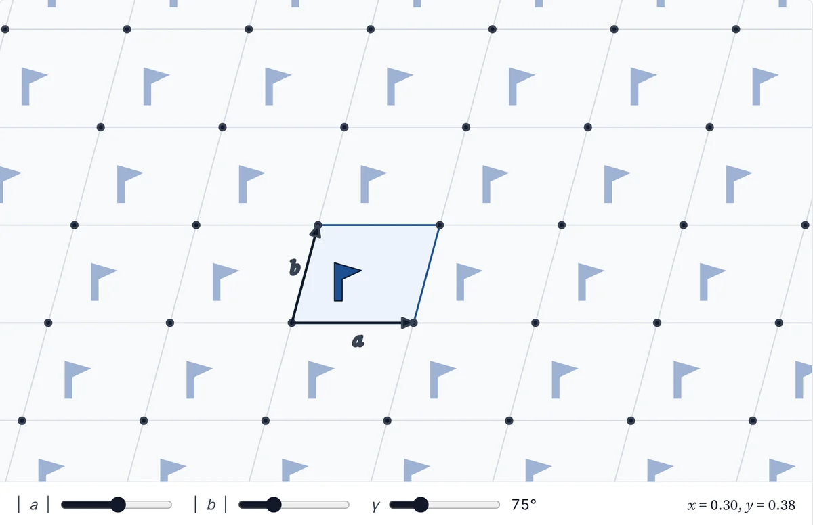

Osman Goni Ridwan
Computational Materials Scientist
Ph.D. Candidate, Mechanical Engineering · University of North Carolina at Charlotte
I study crystalline materials with first-principles simulation, machine-learning interatomic potentials and molecular dynamics, and generative models for structure discovery. My work spans rare-earth permanent magnets, proton-conducting ceramics, carbon allotropes and molecular crystals.
I work in the Materials Modeling & Informatics Lab with Prof. Qiang Zhu and am an Academic Cooperation Participant at Lawrence Livermore National Laboratory. I expect to complete my Ph.D. in December 2027.
Curriculum vitae (PDF) Google Scholar GitHub MMI Data Hub LinkedIn Email

- Currently
- Academic Cooperation Participant, Lawrence Livermore National Laboratory (2026–27)
- Ph.D.
- Expected December 2027
- Publications
- 4 peer-reviewed, 4 preprints; 2 first-author journal articles
- Service
- Peer reviewer for five journals
Selected research
Four projects that I lead. Use the arrows or swipe to browse.
Machine-learning stage · run to completion
GenerateMatterGen diffusion model
ScreenMatterSim / CHGNet relaxation
Deduplicate · hullMaterials Project references
First-principles stage · streamed under a core budget
Filterenergy above hull
DFTspin-polarized VASP
Analyzehull · moments · report


Expertise
Each area is listed with the work that demonstrates it.
First-principles simulation
Density functional theory for thermodynamic stability, magnetism, migration barriers and phonons; DFTB for large organic crystals.
VASP · DFTB+ · pymatgen · ASE
- Spin-polarized DFT screening of rare-earth magnetsCSPFlow · DOE ARPA-E MAGNITO
- Proton migration barriers in ceramic electrolytes by nudged elastic bandLLNL · 2026–27
- DFT-r²SCAN energies and phonons of new carbon frameworksnpj Comput. Mater. 2026
- DFTB elastic constants of porous peptide crystalsMatter 2026
ML potentials & molecular dynamics
Universal machine-learning interatomic potentials for relaxation, screening and molecular dynamics, validated against DFT.
MACE · UMA · MatterSim · CHGNet · TorchANI · ReaxFF · GULP
- Proton transport with ML-potential molecular dynamicsLLNL · 2026–27
- Benchmark of universal ML force fields for energetic molecular crystalsarXiv 2026
- MACE and ReaxFF validated against VASP for 140 carbon allotropesnpj Comput. Mater. 2026
- MatterSim and CHGNet pre-screening ahead of DFTCSPFlow
Generative models for structure discovery
Symmetry-aware generative models and differentiable optimization that propose new crystal structures toward a target local environment.
PyTorch · VAE · CVAE · GAN · MatterGen · PyXtal
- LEGO-xtal: symmetry-aware crystal generationnpj Comput. Mater. 2026
- Differentiable, GPU-batched latent-space optimizationMach. Learn.: Sci. Technol. 2026
- Crystal representation in reciprocal spacearXiv 2026
- Diffusion-model generation for magnet discoveryCSPFlow
Workflows & open data
Automated, restartable HPC pipelines and open, searchable databases of computed structures.
Python · SLURM · SQLite · Git
- CSPFlow: generation-to-DFT pipeline with 1,200+ testsGitHub · 2026
- MMI Data Hub: 17,596 structures in five open databasesmmi.charlotte.edu · 2026
- LEGO-xtal open-source releaseGitHub · 2025
Learn with me
Open, interactive tutorials on the foundations of computational materials science.

Available
Crystallographic symmetry
An interactive introduction, from lattices and symmetry operations to Wyckoff positions, with a 3D page for each of the 230 space groups.
Chapters
- Lattice and motif
- Symmetry operations
- Crystal systems
- Bravais lattices
- From point groups to space groups
- Hermann–Mauguin symbols
- Wyckoff positions
- The 230 space groups
Data follow the standard settings of the International Tables for Crystallography, Vol. A, generated with PyXtal and spglib; every group page links to the Bilbao Crystallographic Server for comparison.
In Progress
DFT fundamentals and VASP
A practical guide to density functional theory with VASP, from the Kohn–Sham equations to the calculations used in research.
Planned chapters
- Kohn–Sham DFT in practice
- Exchange–correlation functionals: PBE, r²SCAN, DFT+U
- PAW potentials and POTCAR choices, including frozen-4f
- Convergence: cutoff energy, k-points, smearing
- Structure relaxation and equations of state
- Magnetism and spin-polarized calculations
- Phonons and dynamical stability
- Migration barriers with the nudged elastic band
Publications
Synced automatically from Google Scholar; last updated Oct 2026.
- Citations
- 15
- h-index
- 2
- Papers
- 9
-
2026
Benchmarking Universal Machine Learning Force Fields for Crystal Structure Prediction of High-Energy Molecular Systems
arXiv 2609.07477
-
2026
High-throughput Discovery of Magnetic Rare Earth Transition Metal Alloys
arXiv 2608.25270
-
2026
Ab-initio Crystal Structure Determination from Powder X-Ray Diffraction
arXiv 2605.24594
-
2026
Crystal generation using the fully differentiable pipeline and latent space optimization
Machine Learning: Science and Technology 7, 035026
Differentiable, GPU-batched LEGO-xtal: ~5× faster than the CPU workflow, and alternating direct/latent refinement yields ~2.5× more unique low-energy structures.
-
2026
Water-mediated reconfigurable topology and mechanics in porous peptide materials
Matter 9, 102669
-
2026
Crystal Representation in the Reciprocal Space
arXiv 2601.17981
Physics-informed 4D scattering representation for symmetry-aware structure matching and reconstruction.
-
2026
AI-assisted rapid crystal structure generation towards a target local environment
npj Computational Materials 12, 64
LEGO-xtal: 1,741 low-energy sp² carbon allotropes generated from 25 known seeds, including four new negative-curvature graphites.
-
2025
Unveiling X-ray absorption signatures of boron nitride via first-principles simulation and machine learning
Next Materials 9, 101271
-
2023
Numerical Computation of Thermal Performance of Earth Pipe Cooling Systems
Proc. 13th International Conference on Marine Technology (MARTEC 2022)
No publications match this filter.
Experience
-
Jun 2026 – Jun 2027
Lawrence Livermore National Laboratory
Graduate Intern, Computational Chemistry & Materials Science (Jun – Aug 2026); Academic Cooperation Participant (Sep 2026 – Jun 2027)
- Investigating proton migration pathways and energy barriers in ceramic electrolytes with nudged elastic band calculations in VASP and machine-learning interatomic potentials, and proton transport with ML-potential molecular dynamics.
- Relating local atomic environments to migration barriers to identify targets for subsequent crystal generation and screening.
- Presented the work at the LLNL Summer Student Symposium.
-
Jan 2024 – Present
Graduate Research Assistant
University of North Carolina at Charlotte · Materials Modeling & Informatics Lab
- Lead developer of LEGO-xtal and its differentiable GPU successor (first author, npj Comput. Mater. 2026; MLST 2026).
- Developing CSPFlow for rare-earth magnet discovery under DOE ARPA-E MAGNITO.
- Created and lead the MMI Data Hub, the lab's open database of computed structures.
- DFTB elastic constants of peptide crystals (with CUNY); hypothetical boron nitrides for X-ray absorption analysis (with LLNL); ML force-field benchmarks for energetic molecular crystals.
Education
-
Jan 2024 – Dec 2027 (expected)
Ph.D., Mechanical Engineering
University of North Carolina at Charlotte
Dissertation: Motif-Guided Generative Modeling for Materials Structure Discovery. Advisor: Prof. Qiang Zhu. GPA 4.00/4.00.
-
Dec 2025
M.S., Mechanical Engineering
University of North Carolina at Charlotte
Awarded en route to the Ph.D. GPA 4.00/4.00.
-
2017 – 2022
B.Sc., Naval Architecture & Marine Engineering
Bangladesh University of Engineering and Technology
Thesis on the thermal performance of earth-pipe cooling systems (MARTEC 2022).
Honors & service
| 2026 | Distinguished Research Assistant, Graduate Student AwardDepartment of Mechanical Engineering & Engineering Science, UNC Charlotte |
|---|---|
| 2026 | Poster Preview speakerGordon Research Conference |
| 2026 | Poster presentationLLNL Summer Student Symposium |
| 2025 | Best Poster AwardCITRANS Symposium, UNC Charlotte |
| 2024 | Poster Preview speakerGordon Research Conference |
Service
Peer reviewer: npj Computational Materials, The Journal of Chemical Physics, Crystal Growth & Design, Machine Learning: Science and Technology, Journal of Physics: Materials.
Memberships: American Chemical Society; Materials Research Society.

News
Released MMI Data Hub v1.0, one search across five open databases of computed crystal structures. Visit
Continuing the LLNL project as an Academic Cooperation Participant through June 2027.
Released CSPFlow, an automated pipeline from AI structure generation to DFT for magnet discovery. Code
Joined Lawrence Livermore National Laboratory as a graduate intern in Computational Chemistry and Materials Science.
Received the Distinguished Research Assistant award from the Department of Mechanical Engineering & Engineering Science. Announcement
The differentiable LEGO-xtal paper is published in Machine Learning: Science and Technology. Paper
Peptide-materials paper on water-mediated topology and mechanics published in Matter. Paper
LEGO-xtal published in npj Computational Materials. Paper
Completed the M.S. in Mechanical Engineering.
Best Poster Award at the CITRANS Symposium, UNC Charlotte.
LEGO-xtal released as open source. Code
Contact
I am open to research scientist positions in industry and national laboratories, and to postdoctoral positions, in computational materials science, after I complete my Ph.D. in December 2027.
University of North Carolina at Charlotte
Charlotte, NC, USA